Integração LTI 1.3
Streaming de livros digitais integrado ao seu LMS. Selecione sua plataforma e siga o passo a passo.
Antes de começar
A integração LTI 1.3 permite que o Minha Biblioteca funcione diretamente dentro do seu LMS, com autenticação automática para professores e alunos. A configuração é feita uma única vez pelo administrador.
Endpoints do Minha Biblioteca PRD — Produção
Use os dados abaixo para configurar a ferramenta no seu LMS. Estes valores são fixos para todos os clientes e correspondem ao ambiente de produção (fusion.minhabiblioteca.com.br):
| Campo | Valor |
|---|---|
| Tool URL / Launch URL | https://fusion.minhabiblioteca.com.br/accounts/api/v1/lti/launch |
| Login URL (OIDC Initiation) | https://fusion.minhabiblioteca.com.br/accounts/api/v1/lti/login |
| Redirect URI(s) | https://fusion.minhabiblioteca.com.br/accounts/api/v1/lti/launch |
| Public Keyset URL (JWKS) | https://fusion.minhabiblioteca.com.br/accounts/api/v1/lti/jwks |
Endpoints do Minha Biblioteca HMG — Homologação
Use apenas para testes e validação de integração. Domínio: fusion.green.stage.minhabiblioteca.dev:
| Campo | Valor |
|---|---|
| Tool URL / Launch URL | https://fusion.green.stage.minhabiblioteca.dev/accounts/api/v1/lti/launch |
| Login URL (OIDC Initiation) | https://fusion.green.stage.minhabiblioteca.dev/accounts/api/v1/lti/login |
| Redirect URI(s) | https://fusion.green.stage.minhabiblioteca.dev/accounts/api/v1/lti/launch |
| Public Keyset URL (JWKS) | https://fusion.green.stage.minhabiblioteca.dev/accounts/api/v1/lti/jwks |
Custom Parameter (obrigatório)
Além dos endpoints, você receberá da nossa equipe uma api_key exclusiva da sua instituição. Essa chave deve ser configurada como Custom Parameter no LMS:
| Parâmetro | Formato |
|---|---|
api_key | api_key=CHAVE_FORNECIDA_PELA_MB |
api_key=VALOR (sem espaços, sem aspas).⚡ Verificação importante antes de integrar
O Minha Biblioteca utiliza nome e email dos usuários para autenticação. Problemas no cadastro do LMS causam falhas que nem sempre exibem mensagem de erro clara. Verifique antes de iniciar:
📧 Emails dos usuários devem ser válidos
Todos os usuários precisam ter email completo e válido no cadastro do LMS (ex: joao.silva@instituicao.edu.br). Emails incompletos como joao.silva (sem domínio), joao.silva@ (sem domínio após @) ou campos vazios causam falha no acesso à ferramenta.
Dica: se importou usuários via planilha, revise a coluna de email antes de integrar.
👤 Nomes devem estar completos (nome + sobrenome)
O cadastro de cada usuário precisa ter nome e sobrenome (com espaço entre eles). Nomes como JoaoSilva (sem espaço) ou apenas Joao (sem sobrenome) podem impedir o acesso.
Dica: verifique se os campos "First Name" e "Last Name" estão preenchidos corretamente no LMS.
🔤 Caracteres especiais e acentos
Nomes com acentos e caracteres especiais (João, André, María) são aceitos normalmente, desde que o LMS envie os dados em UTF-8. Se nomes aparecerem com caracteres estranhos após a integração, entre em contato conosco.
Pré-requisitos — Canvas
- Canvas Cloud ou Self-Hosted
- Acesso de Account Admin com permissão "Chaves do desenvolvedor - manage"
- HTTPS habilitado
Criar a Chave do desenvolvedor
Preencha os campos da Chave do desenvolvedor manualmente conforme os valores abaixo:
- Acesse o Canvas como administrador → Admin → Chaves do desenvolvedor
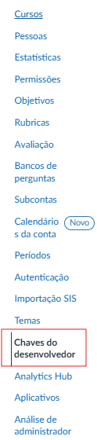
- Clique em "+ Chave do desenvolvedor" → "+ Chave LTI"
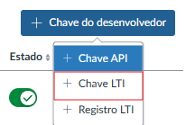
- Em Método, selecione "Inserção manual"
- Preencha os campos:
| Campo | PRD — Produção | HMG — Homologação |
|---|---|---|
| Nome da chave | Minha Biblioteca | Minha Biblioteca |
| URI do link de destino | https://fusion.minhabiblioteca.com.br/accounts/api/v1/lti/launch | https://fusion.green.stage.minhabiblioteca.dev/accounts/api/v1/lti/launch |
| URL de iniciação do OpenID Connect | https://fusion.minhabiblioteca.com.br/accounts/api/v1/lti/login | https://fusion.green.stage.minhabiblioteca.dev/accounts/api/v1/lti/login |
| Redirecionar URIs | https://fusion.minhabiblioteca.com.br/accounts/api/v1/lti/launch | https://fusion.green.stage.minhabiblioteca.dev/accounts/api/v1/lti/launch |
| Método JWK | JWK pública (URL) | JWK pública (URL) |
| JWK pública | https://fusion.minhabiblioteca.com.br/accounts/api/v1/lti/jwks | https://fusion.green.stage.minhabiblioteca.dev/accounts/api/v1/lti/jwks |
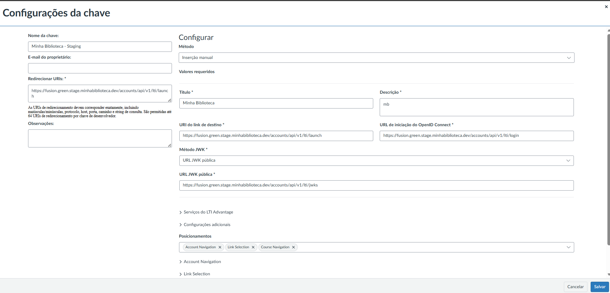
- Em "Configurações adicionais", defina Nível de privacidade = "Público"
- Ainda em Configurações adicionais, localize o campo "Posicionamentos" e adicione "Course Navigation" — isso faz a MB aparecer no menu lateral da disciplina
- Ainda em Posicionamentos, expanda "Link Selection" e em "Selecionar tipo de mensagem" marque "LtiDeepLinkingRequest"
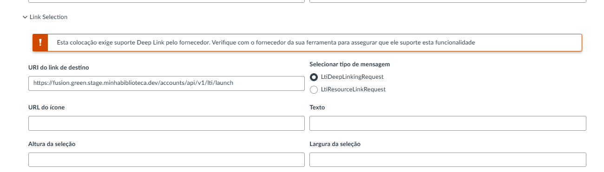
- Ainda em Configurações adicionais, vá até "Campos personalizados" e adicione:
api_key=CHAVE_FORNECIDA_PELA_MB
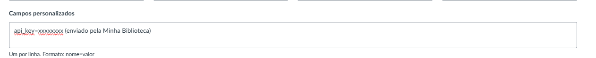
- Clique em "Salvar"
- Na lista, ative o toggle para "Ativado"
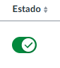
api_key=SuaChaveAqui — sem espaços, sem aspas, sem quebra de linha. Substitua SuaChaveAqui pela chave que nossa equipe enviou.api_key em Campos personalizados e salve.Copiar os IDs gerados
Após salvar a Chave do desenvolvedor, o Canvas exibe a chave na lista. Siga os passos para copiar os IDs necessários:
- Na lista de Chaves do desenvolvedor, localize a chave recém-criada
- Na coluna Detalhes, clique em "Exibir no Canvas Apps"
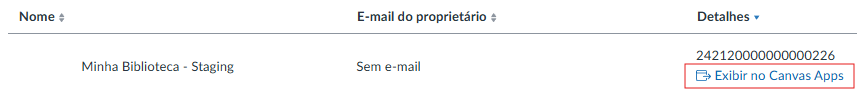
- Copie e salve o Id do cliente exibido na tela
- Na mesma tela, localize e copie o Id da implantação
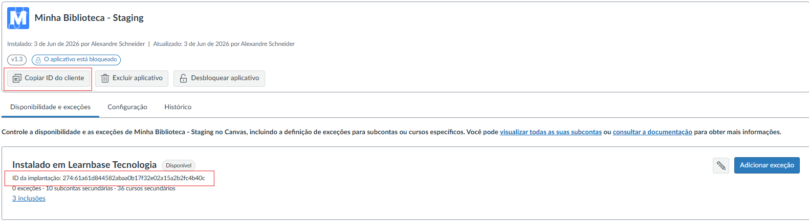
- Ainda na mesma tela, clique no ícone de lápis (editar) ao lado da instalação
- No dropdown que aparecer, altere de "Não disponível" para "Disponível" — isso garante que o app ficará ativo para os usuários
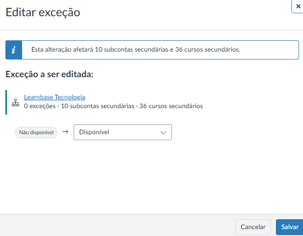
cliente.instructure.com) — para enviar à nossa equipe no próximo passo.Dados para nos enviar
📤 Envie para nossa equipe:
- Id do cliente (copiado no Passo 2)
- Id da implantação (copiado no Passo 2)
- Domínio completo da instância (ex:
cliente.instructure.com)
Gerenciar disponibilidade por sub-conta
É possível controlar em quais sub-contas ou cursos a ferramenta fica disponível:
- Acesse Admin → Chaves do desenvolvedor
- Localize a Chave do desenvolvedor criada e clique em "Ver aplicativo" (link ao lado do toggle On/Off) — isso abre a aba Canvas Apps
- Na tela do aplicativo, acesse a aba "Disponibilidade e exceções"
- Para desabilitar em uma sub-conta específica, clique em "Adicionar exceção"
- Selecione a sub-conta desejada e altere de "Disponível" para "Não disponível"
- Clique em "Salvar"
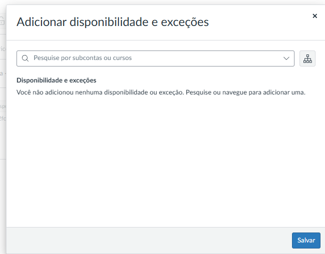
Próximos passos — Guia do Professor
Com a integração configurada, compartilhe o guia abaixo com os professores da instituição. Ele cobre o teste inicial, o acesso pelo menu lateral e o uso de Deep Linking para vincular livros e capítulos diretamente nos módulos da disciplina.
📘 Acessar Guia do Professor — Canvas →Problemas comuns
| Problema | Solução |
|---|---|
| "Invalid developer key" | Toggle da Chave do desenvolvedor está "On"? Client ID correto? |
| Tela em branco | Redirect URIs exatamente iguais (https://, barra final) |
| Usuário sem nome | Privacy Level = "Public" em Additional Settings |
| Erro ao acessar (só alguns usuários) | Email do usuário válido no LMS? (com @ e domínio completo). Nome com espaço entre nome e sobrenome? |
| Fica pedindo login repetidamente | Cookies de terceiros bloqueados no navegador. Testar com cookies habilitados |
| Funcionava e parou de funcionar | Verificar se um novo Deployment ID foi gerado (reinstalação da ferramenta) |
Pré-requisitos — Moodle
- Moodle 3.8+ (recomendado 4.x+)
- Acesso de Site Administrator
- HTTPS habilitado
Registrar a Ferramenta
- Administração do site → Plugins → Módulos de atividade → Ferramenta externa (LTI) → Gerenciar ferramentas
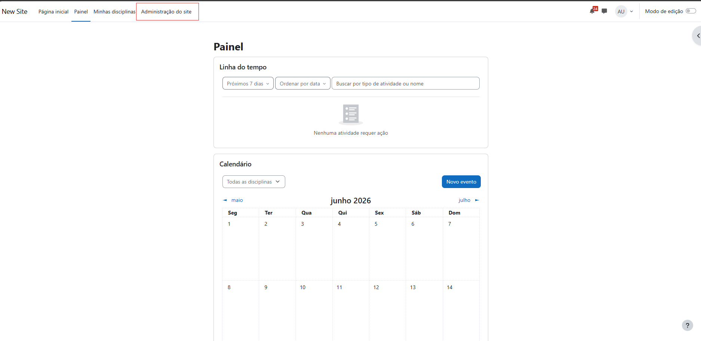
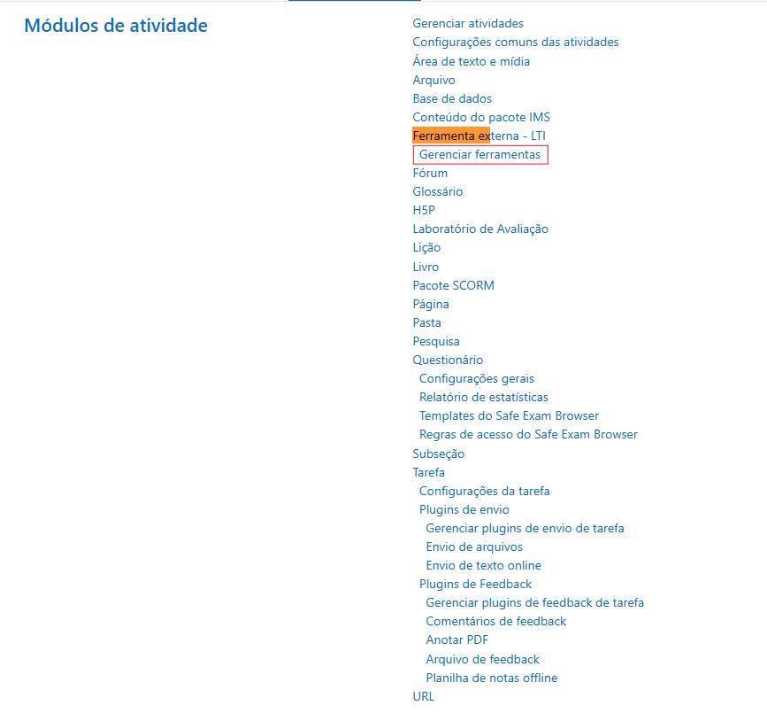
- Clique em "Configurar uma ferramenta manualmente"
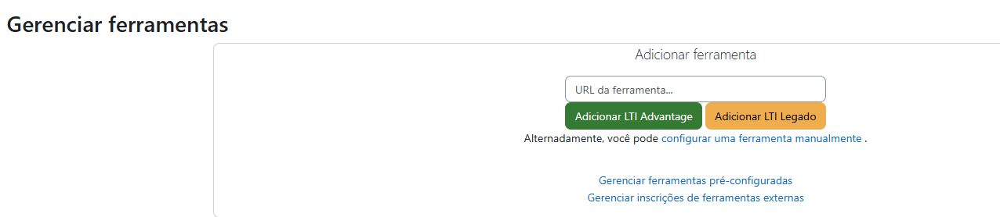
- Preencha os campos:
| Campo | Valor |
|---|---|
| Nome da ferramenta | Minha Biblioteca |
| URL da ferramenta | https://fusion.minhabiblioteca.com.br/accounts/api/v1/lti/launch |
| Versão do LTI | LTI 1.3 |
| Tipo de chave pública | Keyset URL |
| Public keyset | https://fusion.minhabiblioteca.com.br/accounts/api/v1/lti/jwks |
| Iniciar URL de login | https://fusion.minhabiblioteca.com.br/accounts/api/v1/lti/login |
| URI(s) de redirecionamento | https://fusion.minhabiblioteca.com.br/accounts/api/v1/lti/launch |
| Container de inicialização padrão | Nova janela (para abrir a Minha Biblioteca em nova aba) |
| Parâmetros personalizados | api_key=CHAVE_FORNECIDA_PELA_MB |
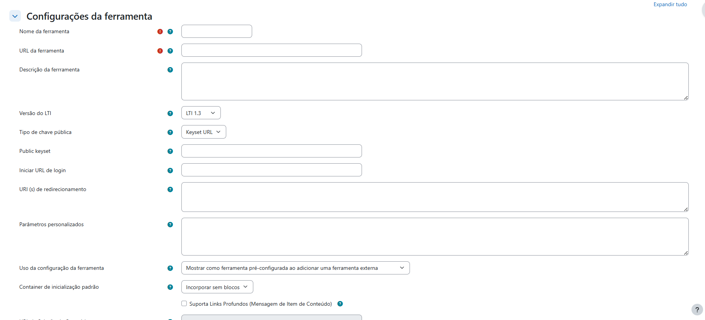
- Role até a seção "Suporta Links Profundos (Mensagem de Item de Conteúdo)" — marque a caixa e preencha o campo "URL de Seleção de Conteúdo" com a mesma URL de launch:
https://fusion.minhabiblioteca.com.br/accounts/api/v1/lti/launch
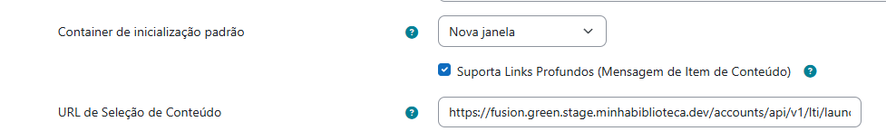
- Em Privacidade: "Compartilhar nome do iniciador" e "Compartilhar e-mail do iniciador" = "Sempre"; marque também "Forçar SSL"
- Clique em "Salvar alterações"
Dados para nos enviar
Na lista de ferramentas, localize a Minha Biblioteca e clique no ícone de lupa 🔍. Uma tela com todos os dados gerados será exibida — copie tudo e envie para nossa equipe.
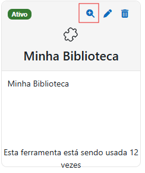
📤 Exemplo dos dados a enviar:
- ID da plataforma:
https://moodle.suainstituicao.edu.br - ID do cliente:
AbCdEfGhIjKlMnO - ID de implantação:
1 - URL do conjunto de chaves públicas:
https://moodle.suainstituicao.edu.br/mod/lti/certs.php - URL do token de acesso:
https://moodle.suainstituicao.edu.br/mod/lti/token.php - URL de solicitação de autenticação:
https://moodle.suainstituicao.edu.br/mod/lti/auth.php
Próximos passos — Guia do Professor
Com a integração configurada, compartilhe o guia abaixo com os professores da instituição. Ele cobre o teste inicial, o acesso geral ao acervo e o uso de Deep Linking para vincular livros e capítulos diretamente nas disciplinas.
📘 Acessar Guia do Professor — Moodle →Erros e suporte
Se encontrar algum problema durante ou após a configuração, entre em contato com nossa equipe de suporte enviando:
- Descrição do erro encontrado
- Print da mensagem de erro exibida
- Print da configuração utilizada (tela de configuração da ferramenta no Moodle)
Pré-requisitos — Blackboard
- Blackboard Learn SaaS (Ultra ou Original)
- System Administrator
- HTTPS habilitado
Registrar a Ferramenta
- System Admin → Integrations → LTI Tool Providers
- Clique em "Register LTI 1.3/Advantage Tool"
- Insira o Client ID que fornecemos → "Submit"
- Configure: Tool Status = "Approved", habilite compartilhamento de Role, Name e Email
Criar o Placement
- Na tela de detalhes do Tool Provider → aba "Placements" → "Create Placement"
- Preencha os campos:
| Campo | Valor |
|---|---|
| Label | Minha Biblioteca |
| Handle | minha-biblioteca (identificador único, sem espaços) |
| Availability | Yes |
| Type | Deep Linking content tool |
| Target Link URI | https://fusion.minhabiblioteca.com.br/accounts/api/v1/lti/launch |
| Custom Parameters | api_key=CHAVE_FORNECIDA_PELA_MB |
api_key.Dados para nos enviar
📤 Envie para nossa equipe:
- Application ID
- Deployment ID
- Domínio da instância (ex:
https://blackboard.suainstituicao.edu.br) - Issuer (
https://blackboard.compara SaaS) - JWKS URL, Token Endpoint, Auth Endpoint
Teste
- Acesse um curso de teste como professor
- Adicione a ferramenta LTI ao conteúdo do curso (o caminho varia entre Blackboard Ultra e Original)
- Clique no link criado — você deve ser redirecionado para a Minha Biblioteca (biblioteca geral)
- Se a ferramenta abrir corretamente, a integração está funcionando
Como o professor vincula livros e conteúdos
Após a configuração acima, o professor pode disponibilizar a Minha Biblioteca de duas formas:
Opção A — Acesso geral
O professor adiciona a MB como ferramenta no conteúdo do curso (Ultra: Content Market / Original: Build Content → External Tool). O aluno clica e acessa a home da MB — busca livre no acervo.
Opção B — Link direto para livro ou página específica (Deep Linking)
- Professor seleciona a Minha Biblioteca como ferramenta ao adicionar conteúdo no curso
- A interface de seleção da MB abre automaticamente — professor seleciona livros ou coleta URLs de páginas
- Cada seleção vira um item independente no conteúdo do curso; aluno clica e vai direto ao conteúdo escolhido
Próximos passos — Guia do Professor
Com a integração configurada, compartilhe o guia abaixo com os professores da instituição. Ele cobre o teste inicial, o acesso pelo menu lateral e o uso de Deep Linking para vincular livros e capítulos diretamente nos módulos da disciplina.
📘 Acessar Guia do Professor — Blackboard →Pré-requisitos — D2L Brightspace
- Brightspace versão 20.21.1+
- Super Administrator ou Admin com "Manage External Learning Tools"
- HTTPS habilitado
Registrar a Ferramenta LTI (Extensibilidade)
Existem duas formas de registrar. Recomendamos o Método A (Dinâmico) por ser mais rápido.
🚀 Método A — Registro Dinâmico (Recomendado)
- Acesse o Brightspace → clique na engrenagem ⚙️ (Admin)
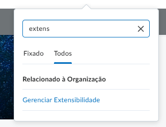
- Navegue até Extensibilidade → LTI Advantage
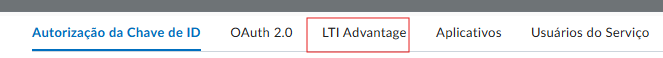
- Clique em "Registrar ferramenta" → selecione "Dinâmico"
- Cole a URL de registro dinâmico fornecida pela nossa equipe
- Clique em "Registrar" — o Brightspace preencherá os campos automaticamente
- Revise os dados e clique em "Save"
📝 Método B — Registro Padrão (Manual)
Se não tiver a URL de registro dinâmico, registre manualmente:
- Acesse o Brightspace → clique na engrenagem ⚙️ (Admin)
- Navegue até Extensibilidade → LTI Advantage
- Clique em "Registrar ferramenta" → selecione "Padrão"
- Preencha os campos:
| Campo | Valor |
|---|---|
| Nome | Minha Biblioteca |
| Domínio | fusion.minhabiblioteca.com.br |
| Redirecionar URLs | https://fusion.minhabiblioteca.com.br/accounts/api/v1/lti/launch |
| URL de login do OpenID Connect | https://fusion.minhabiblioteca.com.br/accounts/api/v1/lti/login |
| URI do link de destino | https://fusion.minhabiblioteca.com.br/accounts/api/v1/lti/launch |
| URL do conjunto de chaves | https://fusion.minhabiblioteca.com.br/accounts/api/v1/lti/jwks |
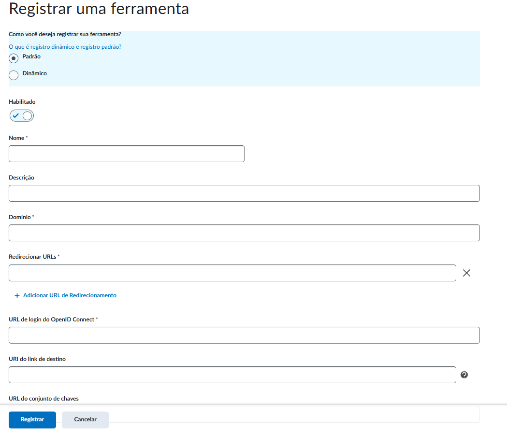
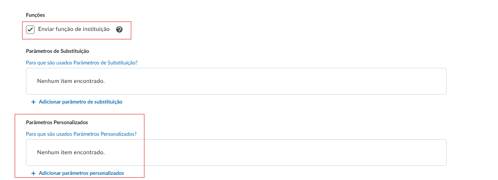
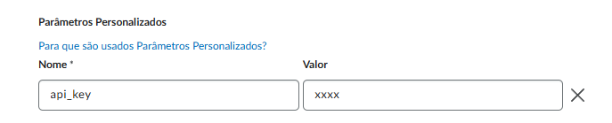
- Clique em "Salvar"
Implantações
- Ainda na tela de configuração do LTI, clique em "Exibir implantações"
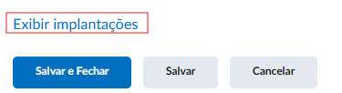
- Clique em "Nova implantação" — uma nova aba será aberta
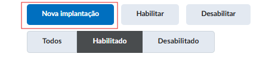
- Escolha a ferramenta criada previamente
- Marque as opções em Configuração de segurança e Definição de configuração conforme a imagem
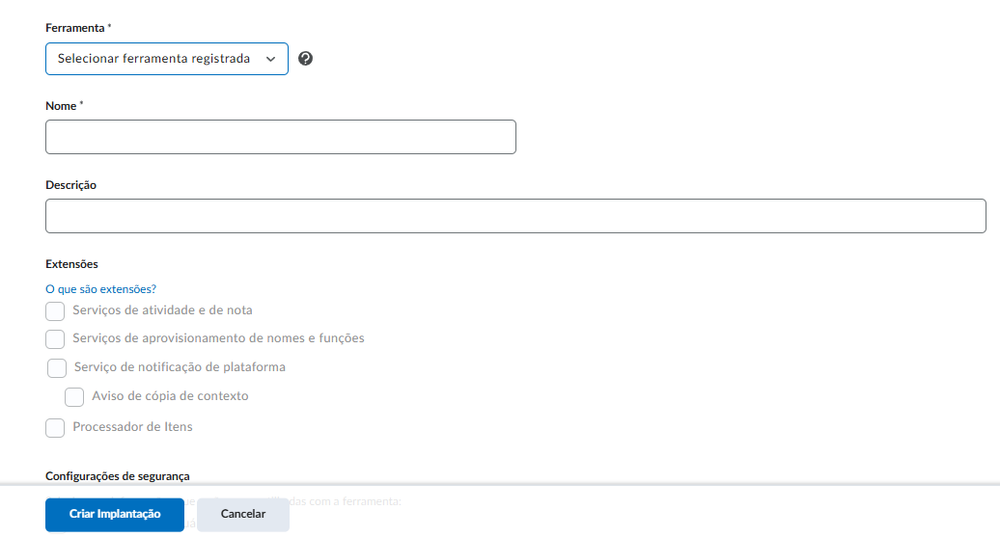
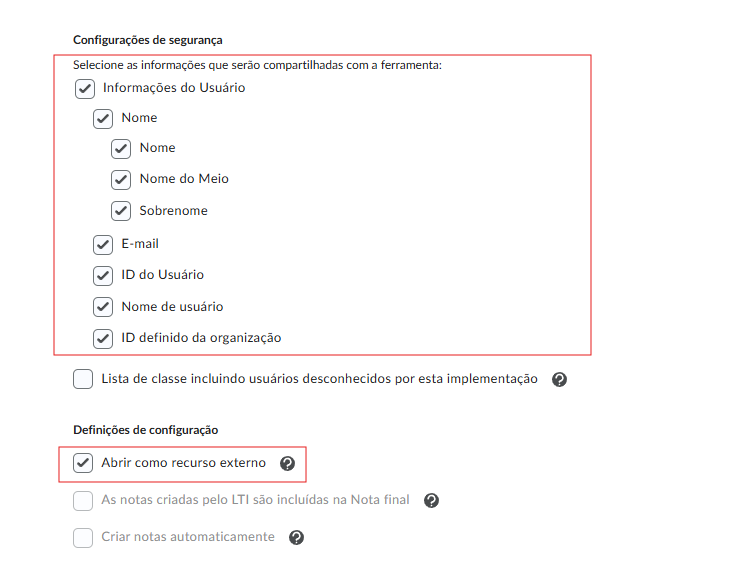
- Clique em "Salvar"
- Clique em "Exibir Links"
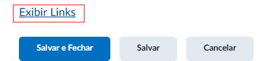
Criar o Link
- Na tela de Links, clique em "Novo"
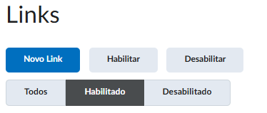
- Preencha o Nome, a URL (use a URL de launch
/accounts/api/v1/lti/launchdo ambiente correspondente) e a Descrição - Em Tipo, escolha conforme o uso desejado:
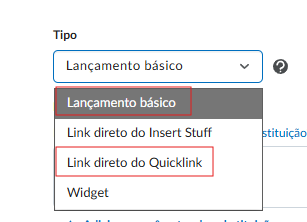
- Deep Link: escolha "Link direto do quicklink" e defina a largura e altura para o seletor de conteúdo — permite que o professor selecione livros e páginas específicas diretamente
- Catálogo padrão: escolha "Lançamento básico" — abre a home da Minha Biblioteca
- Em Parâmetros personalizados, adicione a chave
api_keye o valor fornecido pela Minha Biblioteca - Clique em "Salvar"
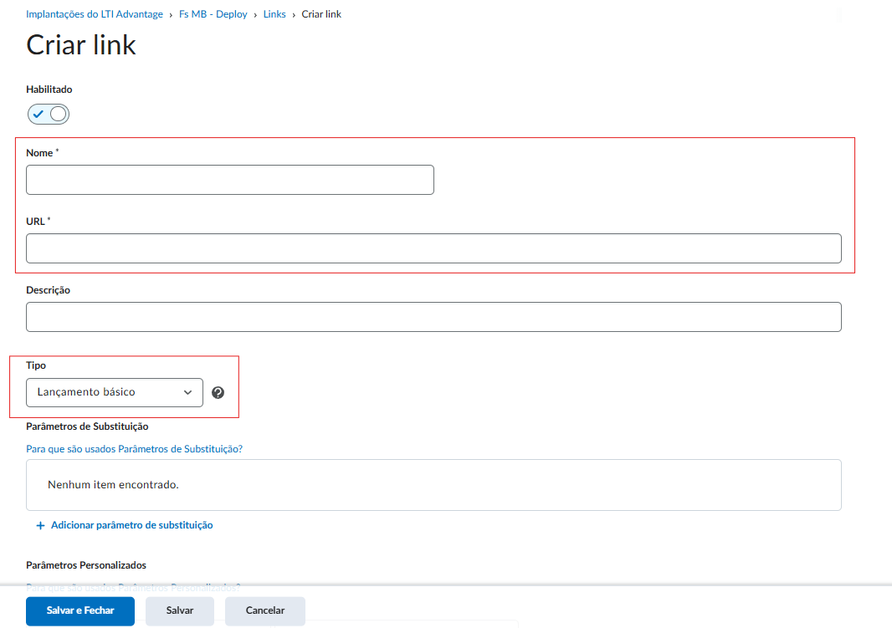
Dados para nos enviar
📤 Envie para nossa equipe:
- Client ID e Deployment ID
- Issuer (URL do seu Brightspace, ex:
https://suainstituicao.brightspace.com) - JWKS URL (ex:
https://suainstituicao.brightspace.com/d2l/.well-known/jwks) - OpenID Auth Endpoint (ex:
https://suainstituicao.brightspace.com/d2l/lti/authenticate) - OAuth2 Token Endpoint (SaaS:
https://auth.brightspace.com/core/connect/token) - OAuth2 Target Audience (SaaS:
https://api.brightspace.com/auth/token)
Próximos passos — Guia do Professor
Com a integração configurada, compartilhe o guia abaixo com os professores da instituição. Ele cobre o acesso geral ao acervo e o uso de Deep Linking para vincular livros e capítulos diretamente nas disciplinas.
📘 Acessar Guia do Professor — Brightspace →Problemas comuns
| Problema | Solução |
|---|---|
| Ferramenta não aparece nos cursos | Deployment criado? Org Units corretas? Enable está ativo? |
| Deep Linking não funciona | Extensions habilitadas no registro E no Deployment? |
| Usuário sem nome/email | Security Settings: Role, Name e Email habilitados? |
| Tela em branco ou erro | Redirect URLs corretas? Domain sem https:// |
| Cookies bloqueados | Testar com cookies de terceiros habilitados |
A-LXP (Grupo A)
Acessar Provedores LTI
- Faça login na A-LXP como administrador
- No menu lateral, clique em Configurações (ícone de engrenagem)
- No submenu, clique em Provedores LTI
- Você verá a lista de provedores LTI já cadastrados (se houver)
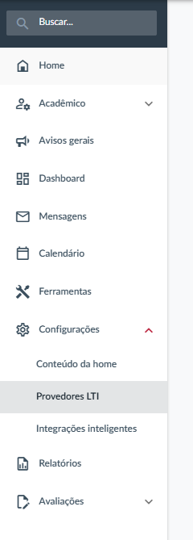
Adicionar Provedor LTI 1.3
Na tela de Provedores LTI, clique no botão + Adicionar provedor. Um modal será exibido com os campos abaixo:
Dados Gerais
| Campo | Valor |
|---|---|
| Domínio | fusion.minhabiblioteca.com.br |
LTI
| Campo | Valor |
|---|---|
| Versão do LTI | Selecione 1.3 (ao trocar de 1.1 para 1.3, novos campos aparecerão) |
| URL de JWKS | https://fusion.minhabiblioteca.com.br/.well-known/jwks.json |
| URL de login | https://fusion.minhabiblioteca.com.br/accounts/api/v1/lti/login |
| URLs de direcionamento | https://fusion.minhabiblioteca.com.br/accounts/api/v1/lti/launch |
Parâmetros Customizados
Ative o toggle Usar parâmetros customizados e preencha:
| Chave | Valor |
|---|---|
api_key | CHAVE_FORNECIDA_PELA_MB |
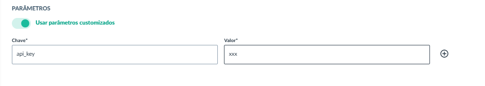
Clique em Salvar.
Copiar os Detalhes da Configuração
Após salvar, abra a tela de Editar provedor (clique nos três pontinhos do provedor → Configurar). No lado direito, aparecerá o card Detalhes da configuração com os dados gerados pela plataforma.
Dados para nos enviar
Na tela Informações do provedor (três pontinhos → Informações do provedor), copie todos os dados abaixo e envie para a nossa equipe:
📤 Envie para nossa equipe:
- ID de implantação (Deployment ID) — ex:
wZEsa9nuSm - ID do cliente (Client ID) — ex:
40ec3514-a89e-4cb0-91d4-3b94eabd5084 - ID da plataforma (Issuer) — ex:
https://api.plataforma.grupoa.education/v3/safea - URL de solicitação de autorização (Auth Endpoint) — ex:
https://api.plataforma.grupoa.education/v3/safea/oauth2/authorize - URL do token de acesso (Token Endpoint) — ex:
https://api.plataforma.grupoa.education/v3/safea/oauth2/token - URL do conjunto de chaves públicas (JWKS URL) — ex:
https://api.plataforma.grupoa.education/v3/safea/oauth2/certs
Próximos passos — Guia do Professor
Com a integração configurada, compartilhe o guia abaixo com os professores da instituição. Ele cobre como adicionar links de acesso ao catálogo e a livros ou páginas específicas diretamente nas disciplinas.
📘 Acessar Guia do Professor — A-LXP →Precisa de ajuda?
Entre em contato com nossa equipe de suporte técnico.
Ao reportar um problema, inclua: LMS e versão, mensagem de erro, passos realizados e screenshot.